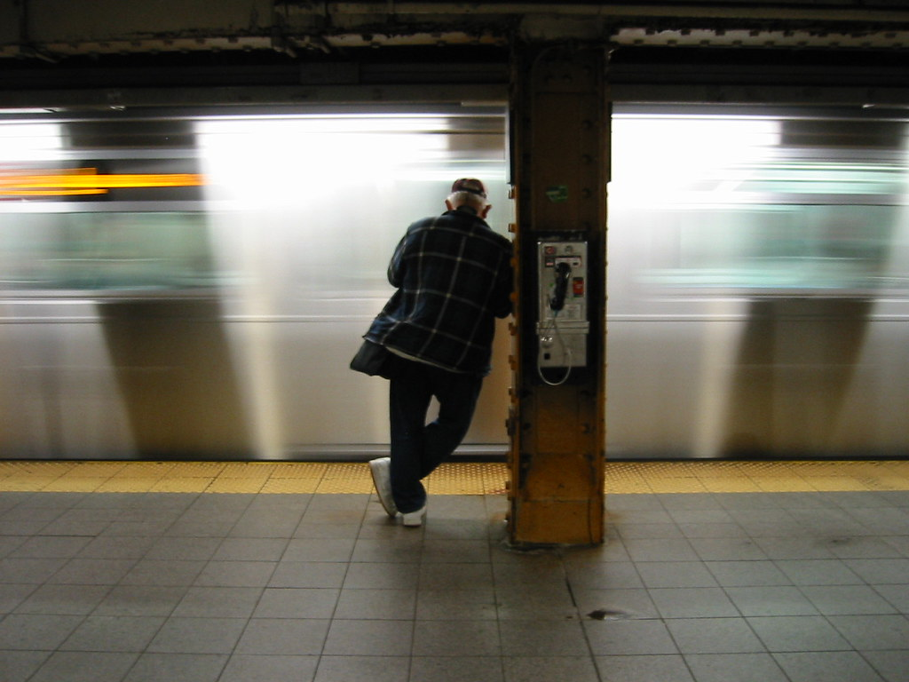

Waiting for the train
"Waiting for the Train: Part II" By FlySi. Licensed under CC by 2.0
Go to the previous page Go to the home page Go to the next pageCredits: This page uses this sound from freesound: Astoria NYC - W Traom Approach Broadway Station - Night/Exterior by flood-mix (http://freesound.org/people/flood-mix/sounds/413385/